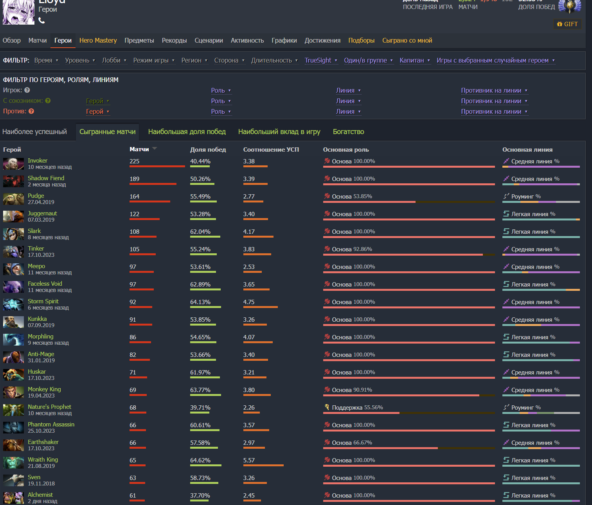
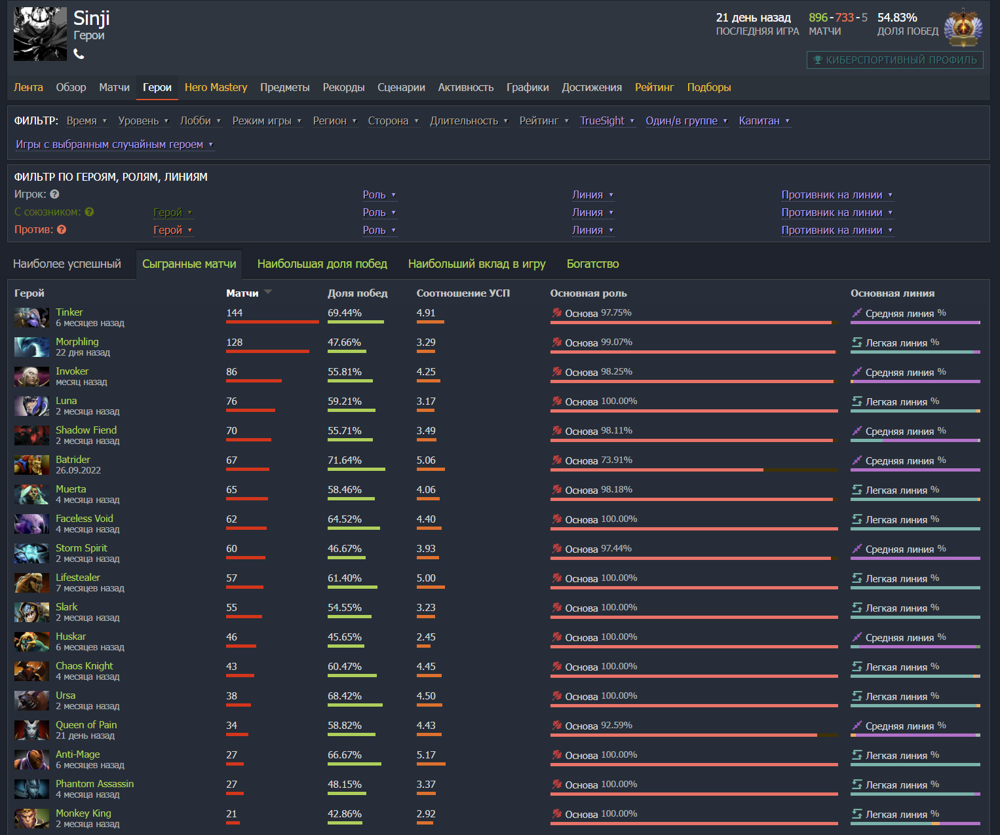

Сharacter lore
Паша родился 04.05.2002 г. в Одессе, городе, где каждый уголок наполнен историей, а морской бриз всегда приносил свежесть и вдохновение. в детстве наш герой был увлечён футболом и учёбой, но совсем скоро его внимание захватил новый мир — мир компьютерных игр. Он с удовольствием погружался в игры, не подозревая, что этот путь приведет его к настоящей страсти.
Начиналось всё с Warcraft III, где Паша играл в режимы, в которых строились базы и создавались армии разных рас. Хотя Dota ещё не существовала в том виде, как мы её знаем, именно это знакомство с Warcraft стало первым шагом в мир, который позже полностью захватит его.
Но игровой мир для героя не ограничивался только Warcraft. В детстве он пробовал множество игр — от браузерных проектов вроде Warface и Minecraft до игр в социальных сетях, таких как ВКонтакте. Каждая из них оставила свой след, но когда вышла Dota 2, Паша понял, что это именно та игра, которая затянет его с головой. С тех пор Dota 2 стала не просто увлечением, а настоящей страстью, в которой он продолжает разбираться и наслаждаться до сих пор.
Когда наш герой начал увлекаться Dota 2, игра была на пике своей популярности. Тысячи игроков мечтали стать профессионалами и выиграть крупнейшие турниры, включая The International — самый престижный турнир по Dota 2. Призовые турниры становились всё более впечатляющими: они начинались с миллиона долларов за первое место и росли с каждым годом, достигая 18 миллионов долларов. Все мечтали о возможности победить и стать частью истории этой невероятной игры.
Но с годами Dota 2 начала терять свою былую популярность. Главный разработчик игры, IceFrog, ушёл из проекта, а внимание разработчиков переключилось на новые амбициозные проекты. Игра, которая когда-то была в центре внимания, стала оставаться на втором плане, и многие её фанаты почувствовали, что разработчики забыли о своей родной игре, которая когда-то была на слуху у всех, что привело к тому, что этот легендарный проект угасает с каждым годом.
Skills
- Irl skills
- Закончил полное средние образование 11 классов.Средний бал≈9.3.
- Закончил ООБМУ(одесское областное базовое мед. училище) на специальность зубной техник младший специалист.
- Не оконченное высшее мед. образование по специальности стоматология.
- Dota skills
- Очень развитый механический скилл, могу показывать очень достойную игру на любом сложном персонаже, требующем опыта и быстрыго нажатий клавиш.
- Сильный лейнинг.
- Могу вести игру на себе и колить команду.
- Большой пул персонажей и быстрая обучаемость всему новому.
- Подстраиваюсь под мету игры.
Experience
- Играю с 2014 года, около ≈10,000 часов в доте.
- Имею огромный опыт игры как на первой, так и на второй позиции. Сейчас основная позиция — 1 (carry — основная и решающая роль в игре, которая за счёт урона [вред, нанесённый персонажам врага] заканчивает игру).
- Опыт игры в команде, участие в турнирах.
- 7400 MMR (Matchmaking Rating), медаль Immortal — 1.91% от игроков в доту.
- Опыт и винрейт на персонажах: на старом и новом аккаунте.
Старый аккаунт
Новый аккаунт
Hobby
Я люблю в свободное от игр и обучения время, смотреть стримеров на площадке Twitch, смотреть аниме и играть в одиночные 3A игры на прохождение.
- Любимые стримеры:
- Любимые аниме:
Любимая озвучка аниме Anilibria
- Time Agent(Shiguang Dailiren)
- 86(Eighty Six)
- Seeing off Friren on her last journey(Sousou no Frieren)
- Solo leveling(Ore dake Level Up na Ken)
- Любимые одиночные игры:
- Red Dead Redemption 2
- dark messiah of might and magic
- Detroit
- Half-Life Alyx
- Ghost of Tsushimа
- elder ring
- God of War Ragnarok
- MafiaII
- Cyberpunk 2077
- The Witcher 3
- Dying light
- Miside
- S.T.A.L.K.E.R. 2
Контактная информация
Електронная почта: pashabiseps228@gmail.com
Телефон: +380505148824